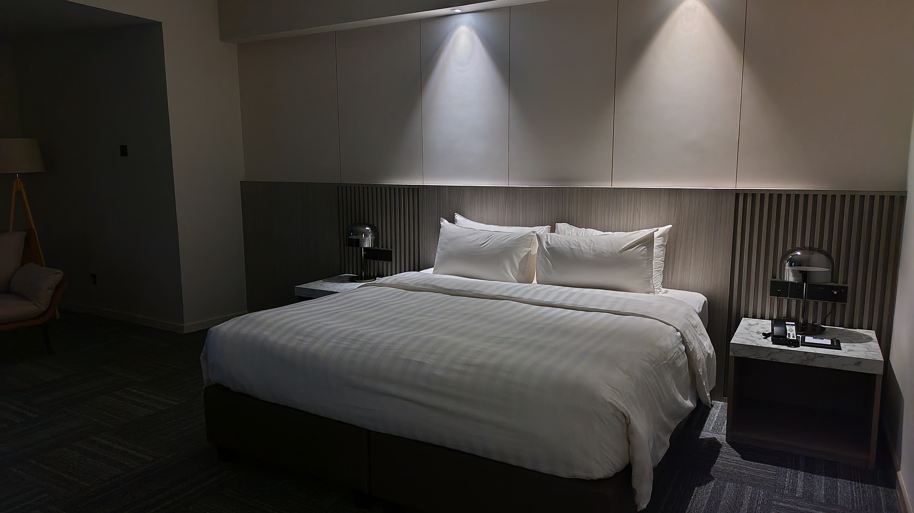
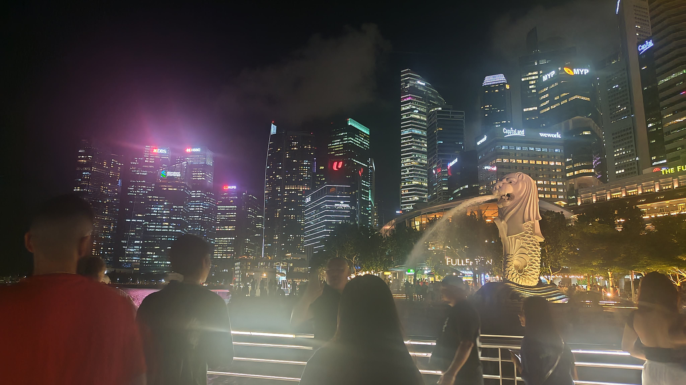
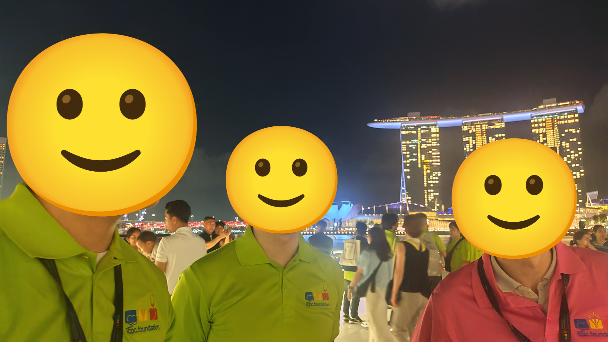
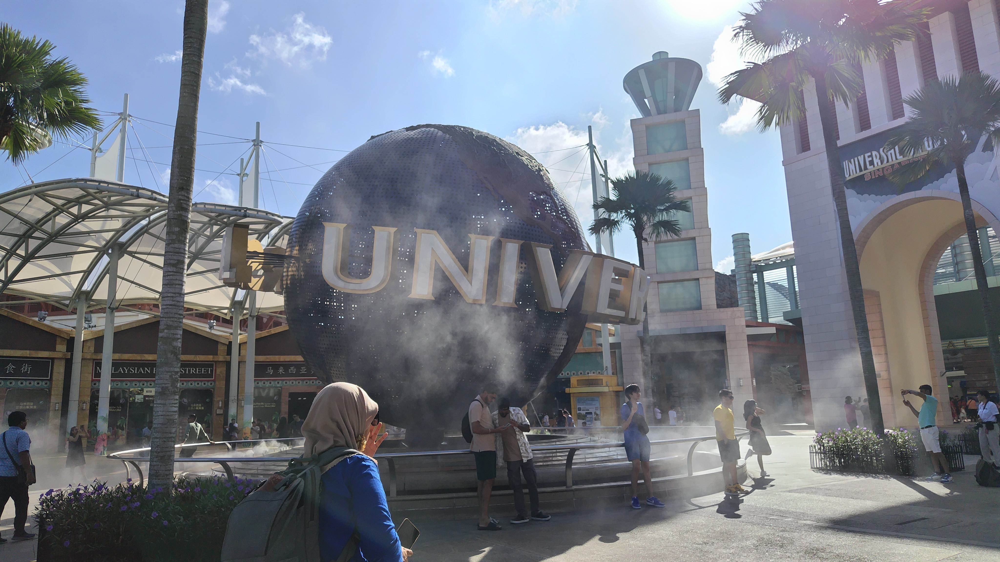

2024年のICPCを振り返る＜後編＞
目次
はじめに
昨年2024年のICPCに Anonyms として Ayuna + momoyuu + someone_ で出場しました。(前編の再掲)
コンテストからかなり期間が空いての文章の公開ですが、下書き自体はコンテスト直後に書いたものであり、読みにくいと感じた部分を加筆修正してはいますが内容はほぼそのまま公開しています。(これも再掲)
まさか自分が競プロで海外に行けるなんて。
2人のおかげです。
もっと強い人間になっていつかは自力で海外に飛び立てるような人になりたいなあ。
2人の活躍は中編を読んでください。
ということで後編はplayoff (The 2025 ICPC Asia Pacific Championship)の話です。
相変わらず長いです。
1日目昼、シンガポールへ
航空券やホテルの手配は3人の意見を出し合いつつもコーチにお任せ。
今まで雑用は私がやりがちでしたが、この時期は卒論が大変だったので助かりました。
当日朝、羽田空港に集合。
運営から事前に「タクシーに入らないからスーツケースはチームで2つまでね！」との案内がありました。
私は家で服の圧縮を頑張り、「お土産なら全員分入れられそう」と大きめスーツケースの半分を空にして持っていきましたが、結局コーチが持ってきた1つの普通の大きさのスーツケースに私以外の3人分のすべての荷物が入りました。
どうして彼らはこんなに荷物が少ないんだ…
飛行機は直行便でした。
入国審査ではパスポートにスタンプをもらえると思っていたものの、審査の自動化によりもらえず。
"Sightseeing!"と言う気満々だったのにその機会がなかった。
あっさり入国し空港からタクシーへ。
乗り場がどこか分からず少し彷徨った。
運営から配布されたタクシーのクーポンの使い方が分かりづらかったらしい。
ホテルに直行しチェックイン。
男子達はすぐそばの部屋でした。
1人部屋と3人部屋で違う階になると思っていたのでびっくり。
だだっ広い部屋にキングベッドが1つポツンとあったのに対して、男子部屋はシングルベッド2つとダブルベッドが1つらしかったので、そっちに1つベッドが動かされたのかしら。
こんなに大きなベッドで寝るなんてそうそうない。
積極的にごろりんちょしておきました。
シャワーは45度くらいのお湯しか出せず髪を洗うのに苦労しました。

1日目夜、食う
夜は隣のホテルのレストランへ。
英語と中国語のメニューの解読に苦労した。
知らない英単語と読めない簡体字ばかり。
あと物価が高い。
各々なんとか注文し、私はタイ米のご飯に鶏肉ときゅうりの何かを食べました。
アジアっぽい味だけれどおいしかったです。
コーチとmomoyuuさんは焼きそばっぽいものを食べていましたがあまり口に合わなかった様子。
レストランからの帰りにコンビニ(なんと、セブンイレブン)に寄りお菓子とアイスを買うことに。
安いポテチが$1.20で売られていましたが、"6 for $6"の表記を見つけた四人衆はかごに6袋つっこむ。
結局この4(5)日間で2袋しか食べなかった。
計画的に消費してくれ。
買ったアイスは早い者勝ちで種類を選びました。
私は一番遅かったので残った青いアイス。
「海外だな〜」という見た目だったものの、意外とおいしかったな。
2日目
朝、寝ぼけつつ男子達に起床報告。
こんな広い部屋を1人で占有してて贅沢だなあと思いながら朝の準備。
朝ご飯はビュッフェ形式でご飯もパンもお肉も少しずつ食べました。
ハッシュドポテトが特に絶品でした。
知っている日本人チームを見つけて少し安心。
ホテルからは貸切バスで会場へ。
劇場のようなところで開会式を迎えました。
色々な人の挨拶を聞き、各チームの紹介へ。
筑波大のI_do_understand_the_danger_of_overflow_and_really_want_to_use_32bit_integerが呼ばれたとき、会場は爆笑に包まれました。
たしかに、このチーム名は一度は声に出してみたい。
彼らにお願いすればいつでもその言葉を早口で唱えてくれます。
会場を移し、リハーサルコンテストは、12問出ていたものの3回ずつ全く同じ問題が出ていて実質4問。
セットアップの仕方を確認。
ノートパソコンだったので普段とあまり変わらない感覚でタイピングできました。
矢印キーだけは配置が違って違和感。
エディタの起動などは横浜大会とほぼ同じ感覚でできたので問題の方に移ります。
問題の内訳は、簡単、ちょっとやるだけ、だれさんが過去に見たことがある、ムズいでした。
横浜大会と違うのは、会場の巨大スクリーンに順位と提出状況が流れていたこと。
パソコン上でそれを確認する必要がなくなり、机から一歩下がり定期的に見ることにしました。
2人は視力が悪くてスクリーンがあまり見えなかった？らしい。
視力が良いってこういうときに役立つのかあ。大切にしたい。
ディナー、そしてプチ観光
コンテスト前夜はとあるホテルのレストランで豪華なビュッフェでした。
いかにも高級感があるところでした。
ビュッフェの準備中、近くにパズルのコーナーがあったのでそこでパズルを解きまくりました。
チームのパズル担当Ayunaさん、じゃんじゃん解きました。
その後のビュッフェ会場ではシェフに注文するとお肉を目の前で切ってくれました。
お肉もスイーツもおいしかった。
ホテルがマーライオンの近くだったので、少し抜け出してチームで見に行きました。
夜風に吹かれて涼しかったです。
くるっと横を向くとマリーナベイ・サンズが見えました。
「これ、SMAPのCMのやつだよ！！」と言ったのですが、誰にも通じず…


3日目朝
3日目も男子部屋に起床報告を飛ばすことから1日が始まりました。
本番中におなかが空かないように朝ご飯を食べ、その後は眠かったので出発直前まで二度寝しました。
会場に到着後、チームの写真を撮影。全体で最後だったらしいです。
写真を見ると「体感よりチームメイト大きいな」となる不思議。
正直、160 cmも180 cmも相手の顔を見るためには見上げることに変わりないし。
あとはタンジェントの問題。
申告したTシャツのサイズはもう一つ下でも余裕ありそうだなとプチ反省。
写真撮影後1チームずつ呼ばれて会場内へ。
定刻通りコンテストが始まりました。
コンテスト本番
帰国後に文章を書き出したので記憶違いがあるかもしれませんが。
まず予定通り、私がセットアップをしている間にだれさんが頭から、momoyuuさんが真ん中から読み始め、その後私は後ろから読みました。
一番後ろのM問題は頭の中の直感が難しいと主張してきたので途中でやめました。
この勘は当たり。
問題文の短いK問題に提出があるのを観測してKについて考えていました。
ソート後の列は左に動かしたもの、swapしたもの、右に動かしたものの順に並んでいるのではないかという予想をしましたがそれを高速化する方法は分からず。
その後インタラクティブ問題を解読する中、L問題のAC数が増えているのを観測。
茶〜緑diffに見えたので私が実装まで行い一発AC。
ここまでが開始約40分なので遅かったなあ。
その間に考察を進めていた2人が後から提出を重ねてくれました。
G問題にかなり苦労していた様子。
でも結局はしっかり通してくれるので良いですね。
私はEとHのインタラクティブ2問とIの正方形の問題に取り組みました。
E問題は厳しい予感を感じ取り、早い段階で捨てました。
HとIを交互ににらめっこ。
H問題は積が0にならなければクエリ回数足りるんだけどなあとなっていた。
I問題はお絵かきをして正方形の作り方を2(3)種類に分類できることとまとめて数える方法があることに気づきました。
だれさんに考え方を説明してそこの細かい部分は託しました。
momoyuuさんもH問題を考え始め、それぞれ「こういう考え方は合ってる？」など話し合いました。
残り40分ほどで、だれさんがI問題の実装を始め、考え方が本当に合っていることを脳内で証明しコードを読む。
残り15分でmomoyuuさんがH問題の本質に迫ったものの、時間の都合上I問題の実装を続けることに。
横浜大会のラスト2分のようなミラクルを信じ最後まで粘ったもののHIどちらも通せず。
コンテストの後半は提出すらできず、終了後はなるべく明るく振る舞うように努めたものの心の中では落ち込んでいました。
朝はコンテスト終了後にいっぱいご飯を食べるぞと意気込んでいたのですが、食欲があまり出なかったなあ。
Yes/Noでは、他のチームがYesで大きな拍手をもらっていく中、Anonymsの名前が拍手もなくあっという間に流れていくのが悲しかったです。
最終結果は37位。
4日目、観光する
最終日の4日目はUniversal Studios Singaporeのチケットをもらったので遊びに行きました。

いわゆる遊園地というものに入るのが6年ぶりで、建物を眺めたりポップコーンの香りを嗅いだりするだけでも楽しかったです。
もちろんアトラクションも。
知らないキャラクターが多くて予習しとけばよかったな。
なんだあのお花みたいなもじゃもじゃは…
夜、チャンギ空港でお土産を買い、シンガポールに別れを告げました。
羽田空港に到着したのは朝でした。機内だけでは寝足りず、帰宅後も睡眠。
結局家でも10時間近く寝て、夕方頃に起床。
そしてご飯を食べ、荷物の片付けをし、昼夜逆転するかと思いきやそんなこともなく夜もまた長時間睡眠。
とにかく体が疲れていました。
2024年のICPCを振り返って
世界大会、行きたかったな。
自分が考えていた2問を通しきりたかった。
2人は「悪い結果にしない」という役割を果たしてくれました。
一方で「良い結果にする」担当の私はあまり動けませんでした。
1年間、「自分がチームに誘ってOKもらったんだからいいだろう」という強気な気持ちと「自分のレート低いし解ける問題多くないし、同じ大学にもっと強い人がいるのだから、momoyuuさんとだれさんにはその人と組んでもらうべきだったな」という気持ちが、8:2〜0:10で揺れ続けました。
国内予選直後や5hの練習を始めたばかりの頃は自信喪失してました。
反対に、合宿後や横浜大会後は自信満々でした。
2人は時々ABCの復習を手伝ってくれたり弱気なときには声をかけてくれたりしました。
気持ちもレートも不安定ながらも1年前より強くなりました。
でもまだ弱いままでした。
横浜大会、そしてplayoffに行けたのは間違いなく2人のおかげです。
もう一生できない経験でした。
1年かけて強い人々とたくさん会うことができました。
その出会いは一期一会で、彼らのうち多くとはもう会えないのかもしれません。
それに悲しむ暇はなく、今は、未来のことも見据えつつ今できる全力で今を過ごしていくことが自分にできることでありすべきことです。
私とmomoyuuさんとだれさん、そしてAnonymsを応援してくれたみなさん、支えてくれたみなさんには深く感謝しています。
だれさんとmomoyuuさん、一緒のチームで活動してくれてありがとう。
自分一人では見ることのできなかった1年間の長い長い夢を見させてくれて本当にありがとうございました。